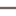

<!doctype html>
<html lang="en">
    <head>
        <meta charset="utf-8">
        <meta http-equiv="X-UA-Compatible" content="IE=edge">
        <meta name="viewport" content="initial-scale=1,user-scalable=no,maximum-scale=1,width=device-width">
        <meta name="mobile-web-app-capable" content="yes">
        <meta name="apple-mobile-web-app-capable" content="yes">
        <link rel="stylesheet" href="css/leaflet.css"><link rel="stylesheet" href="css/L.Control.Locate.min.css">
        <link rel="stylesheet" href="css/qgis2web.css"><link rel="stylesheet" href="css/fontawesome-all.min.css">
        <link rel="stylesheet" href="css/leaflet-search.css">
        <link rel="stylesheet" href="css/leaflet-control-geocoder.Geocoder.css">
        <style>
        html, body, #map {
            width: 100%;
            height: 100%;
            padding: 0;
            margin: 0;
        }
        </style>
        <title></title>
    </head>
    <body>
        <div id="map">
        </div>
        <script src="js/qgis2web_expressions.js"></script>
        <script src="js/leaflet.js"></script><script src="js/L.Control.Locate.min.js"></script>
        <script src="js/leaflet.rotatedMarker.js"></script>
        <script src="js/leaflet.pattern.js"></script>
        <script src="js/leaflet-hash.js"></script>
        <script src="js/Autolinker.min.js"></script>
        <script src="js/rbush.min.js"></script>
        <script src="js/labelgun.min.js"></script>
        <script src="js/labels.js"></script>
        <script src="js/leaflet-control-geocoder.Geocoder.js"></script>
        <script src="js/leaflet-search.js"></script>
        <script src="data/UGM_2.js"></script>
        <script src="data/GedungFasilitasOlahraga_3.js"></script>
        <script src="data/Jalan_4.js"></script>
        <script src="data/FasilitasOlahraga_5.js"></script>
        <script>
        var map = L.map('map', {
            zoomControl:true, maxZoom:28, minZoom:1
        }).fitBounds([[-7.783241654037589,110.35790782175589],[-7.758834752030332,110.41088808685325]]);
        var hash = new L.Hash(map);
        map.attributionControl.setPrefix('<a href="https://github.com/tomchadwin/qgis2web" target="_blank">qgis2web</a> &middot; <a href="https://leafletjs.com" title="A JS library for interactive maps">Leaflet</a> &middot; <a href="https://qgis.org">QGIS</a>');
        var autolinker = new Autolinker({truncate: {length: 30, location: 'smart'}});
        L.control.locate({locateOptions: {maxZoom: 19}}).addTo(map);
        var bounds_group = new L.featureGroup([]);
        function setBounds() {
        }
        map.createPane('pane_GoogleSatellite_0');
        map.getPane('pane_GoogleSatellite_0').style.zIndex = 400;
        var layer_GoogleSatellite_0 = L.tileLayer('https://mt1.google.com/vt/lyrs=s&x={x}&y={y}&z={z}', {
            pane: 'pane_GoogleSatellite_0',
            opacity: 1.0,
            attribution: '',
            minZoom: 1,
            maxZoom: 28,
            minNativeZoom: 0,
            maxNativeZoom: 19
        });
        layer_GoogleSatellite_0;
        map.addLayer(layer_GoogleSatellite_0);
        map.createPane('pane_OpenStreetMap_1');
        map.getPane('pane_OpenStreetMap_1').style.zIndex = 401;
        var layer_OpenStreetMap_1 = L.tileLayer('https://tile.openstreetmap.org/{z}/{x}/{y}.png', {
            pane: 'pane_OpenStreetMap_1',
            opacity: 1.0,
            attribution: '',
            minZoom: 1,
            maxZoom: 28,
            minNativeZoom: 0,
            maxNativeZoom: 19
        });
        layer_OpenStreetMap_1;
        map.addLayer(layer_OpenStreetMap_1);
        function pop_UGM_2(feature, layer) {
        }

        function style_UGM_2_0() {
            return {
                pane: 'pane_UGM_2',
                opacity: 1,
                color: 'rgba(31,120,180,1.0)',
                dashArray: '',
                lineCap: 'butt',
                lineJoin: 'miter',
                weight: 3.0, 
                fill: true,
                fillOpacity: 1,
                fillColor: 'rgba(31,120,180,0.396078431372549)',
                interactive: true,
            }
        }
        map.createPane('pane_UGM_2');
        map.getPane('pane_UGM_2').style.zIndex = 402;
        map.getPane('pane_UGM_2').style['mix-blend-mode'] = 'normal';
        var layer_UGM_2 = new L.geoJson(json_UGM_2, {
            attribution: '',
            interactive: true,
            dataVar: 'json_UGM_2',
            layerName: 'layer_UGM_2',
            pane: 'pane_UGM_2',
            onEachFeature: pop_UGM_2,
            style: style_UGM_2_0,
        });
        bounds_group.addLayer(layer_UGM_2);
        map.addLayer(layer_UGM_2);
        function pop_GedungFasilitasOlahraga_3(feature, layer) {
            var popupContent = '<table>\
                    <tr>\
                        <td colspan="2">' + (feature.properties['Nama'] !== null ? autolinker.link(feature.properties['Nama'].toLocaleString()) : '') + '</td>\
                    </tr>\
                </table>';
            layer.bindPopup(popupContent, {maxHeight: 400});
        }

        function style_GedungFasilitasOlahraga_3_0() {
            return {
                pane: 'pane_GedungFasilitasOlahraga_3',
                opacity: 1,
                color: 'rgba(35,35,35,1.0)',
                dashArray: '',
                lineCap: 'butt',
                lineJoin: 'miter',
                weight: 1.0, 
                fill: true,
                fillOpacity: 1,
                fillColor: 'rgba(213,180,60,1.0)',
                interactive: true,
            }
        }
        map.createPane('pane_GedungFasilitasOlahraga_3');
        map.getPane('pane_GedungFasilitasOlahraga_3').style.zIndex = 403;
        map.getPane('pane_GedungFasilitasOlahraga_3').style['mix-blend-mode'] = 'normal';
        var layer_GedungFasilitasOlahraga_3 = new L.geoJson(json_GedungFasilitasOlahraga_3, {
            attribution: '',
            interactive: true,
            dataVar: 'json_GedungFasilitasOlahraga_3',
            layerName: 'layer_GedungFasilitasOlahraga_3',
            pane: 'pane_GedungFasilitasOlahraga_3',
            onEachFeature: pop_GedungFasilitasOlahraga_3,
            style: style_GedungFasilitasOlahraga_3_0,
        });
        bounds_group.addLayer(layer_GedungFasilitasOlahraga_3);
        map.addLayer(layer_GedungFasilitasOlahraga_3);
        function pop_Jalan_4(feature, layer) {
            var popupContent = '<table>\
                    <tr>\
                        <td colspan="2">' + (feature.properties['id'] !== null ? autolinker.link(feature.properties['id'].toLocaleString()) : '') + '</td>\
                    </tr>\
                    <tr>\
                        <td colspan="2">' + (feature.properties['Nama'] !== null ? autolinker.link(feature.properties['Nama'].toLocaleString()) : '') + '</td>\
                    </tr>\
                </table>';
            layer.bindPopup(popupContent, {maxHeight: 400});
        }

        function style_Jalan_4_0() {
            return {
                pane: 'pane_Jalan_4',
                opacity: 1,
                color: 'rgba(114,95,95,1.0)',
                dashArray: '',
                lineCap: 'square',
                lineJoin: 'bevel',
                weight: 2.0,
                fillOpacity: 0,
                interactive: true,
            }
        }
        map.createPane('pane_Jalan_4');
        map.getPane('pane_Jalan_4').style.zIndex = 404;
        map.getPane('pane_Jalan_4').style['mix-blend-mode'] = 'normal';
        var layer_Jalan_4 = new L.geoJson(json_Jalan_4, {
            attribution: '',
            interactive: true,
            dataVar: 'json_Jalan_4',
            layerName: 'layer_Jalan_4',
            pane: 'pane_Jalan_4',
            onEachFeature: pop_Jalan_4,
            style: style_Jalan_4_0,
        });
        bounds_group.addLayer(layer_Jalan_4);
        map.addLayer(layer_Jalan_4);
        function pop_FasilitasOlahraga_5(feature, layer) {
            var popupContent = '<table>\
                    <tr>\
                        <td colspan="2"> <center> <h2>' + (feature.properties['Nama Fasil'] !== null ? autolinker.link(feature.properties['Nama Fasil'].toLocaleString()) : '') + '</h2></td>\
                    </tr>\
                    <tr>\
                        <td colspan="2"> <center> <b>Alamat: </b>' + (feature.properties['Alamat'] !== null ? autolinker.link(feature.properties['Alamat'].toLocaleString()) : '') + '</td>\
                    </tr>\
                    <tr>\
                        <td colspan="2"> <center> <b>Fungsi Fasilitas: </b>' + (feature.properties['Fungsi Fas'] !== null ? autolinker.link(feature.properties['Fungsi Fas'].toLocaleString()) : '') + '</td>\
                    </tr>\
                    <tr>\
                        <td colspan="2"> <center> ' + (feature.properties['Foto'] !== null ? '' : '') + '</td>\
                    </tr>\
                    <tr>\
                        <td colspan="2"> <center> <b>Informasi mengenai fasilitas: </b>' + (feature.properties['Informasi'] !== null ? autolinker.link(feature.properties['Informasi'].toLocaleString()) : '') + '</td>\
                    </tr>\
                </table>';
            layer.bindPopup(popupContent, {maxHeight: 400});
        }

        function style_FasilitasOlahraga_5_0() {
            return {
                pane: 'pane_FasilitasOlahraga_5',
                radius: 4.0,
                opacity: 1,
                color: 'rgba(61,128,53,1.0)',
                dashArray: '',
                lineCap: 'butt',
                lineJoin: 'miter',
                weight: 2.0,
                fill: true,
                fillOpacity: 1,
                fillColor: 'rgba(84,176,74,1.0)',
                interactive: true,
            }
        }
        map.createPane('pane_FasilitasOlahraga_5');
        map.getPane('pane_FasilitasOlahraga_5').style.zIndex = 405;
        map.getPane('pane_FasilitasOlahraga_5').style['mix-blend-mode'] = 'normal';
        var layer_FasilitasOlahraga_5 = new L.geoJson(json_FasilitasOlahraga_5, {
            attribution: '',
            interactive: true,
            dataVar: 'json_FasilitasOlahraga_5',
            layerName: 'layer_FasilitasOlahraga_5',
            pane: 'pane_FasilitasOlahraga_5',
            onEachFeature: pop_FasilitasOlahraga_5,
            pointToLayer: function (feature, latlng) {
                var context = {
                    feature: feature,
                    variables: {}
                };
                return L.circleMarker(latlng, style_FasilitasOlahraga_5_0(feature));
            },
        });
        bounds_group.addLayer(layer_FasilitasOlahraga_5);
        map.addLayer(layer_FasilitasOlahraga_5);
        var osmGeocoder = new L.Control.Geocoder({
            collapsed: true,
            position: 'topleft',
            text: 'Search',
            title: 'Testing'
        }).addTo(map);
        document.getElementsByClassName('leaflet-control-geocoder-icon')[0]
        .className += ' fa fa-search';
        document.getElementsByClassName('leaflet-control-geocoder-icon')[0]
        .title += 'Search for a place';
        var baseMaps = {};
        L.control.layers(baseMaps,{' Fasilitas Olahraga': layer_FasilitasOlahraga_5,' Jalan': layer_Jalan_4,' Gedung Fasilitas Olahraga': layer_GedungFasilitasOlahraga_3,' UGM': layer_UGM_2,"OpenStreetMap": layer_OpenStreetMap_1,"Google Satellite": layer_GoogleSatellite_0,}).addTo(map);
        setBounds();
        map.addControl(new L.Control.Search({
            layer: layer_FasilitasOlahraga_5,
            initial: false,
            hideMarkerOnCollapse: true,
            propertyName: 'Nama Fasil'}));
        document.getElementsByClassName('search-button')[0].className +=
         ' fa fa-binoculars';
        </script>
    </body>
</html>
